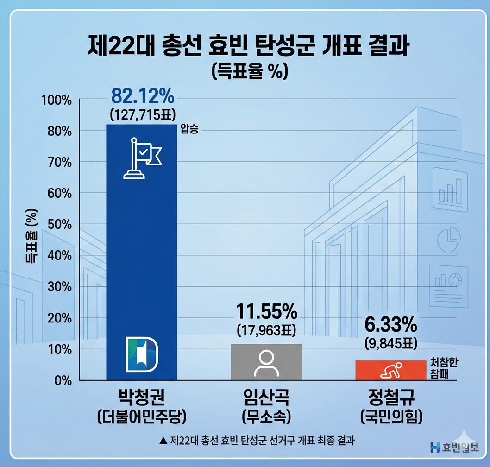

'망언 폭격기' 정철규의 비참한 최후... 민주당 텃밭이라지만 무소속에도 밀린 6.33% '역대 최악 참패'
입력 2024.04.11. 08:30 | 수정 2024.04.11. 09:15
제22대 총선 효빈 탄성군 개표 결과, 민주당 박청권(82.12%) 압승
개발 이후 '보수 무덤' 된 험지라지만... 국민의힘 후보 6.33% 3위는 헌정사상 '최악의 참패'
고해역 난동, 청년·여성 비하, 서브컬처 폄훼 등 잇따른 망언이 부른 '자업자득'
지역 정치권 "기본적인 지역 현안조차 파악 못한 구태 정치의 종말"

[효빈일보 = 윤기자] 제22대 국회의원 선거 효빈광역시 탄성군 선거구에서 이변 아닌 이변이 연출되었다. 선거 기간 내내 각종 막말과 기행으로 논란의 중심에 섰던 정철규 국민의힘 후보가 한 자릿수 득표율을 기록하며 참패했다.
중앙선거관리위원회의 최종 개표 결과에 따르면, 더불어민주당의 신인 박청권 후보가 82.12%(127,715표)라는 압도적인 지지로 당선되었다. 반면 정철규 후보는 고작 **6.33%(9,845표)**를 얻는 데 그쳐, 11.55%(17,963표)를 득표한 무소속 임산곡 후보에게마저 더블 스코어 가까이 밀리며 **3위**로 주저앉았다.
공직선거법상 유효투표 총수의 15% 이상을 득표해야 선거비용 전액을, 10% 이상~15% 미만을 득표해야 반액을 보전받을 수 있다. 그러나 정 후보는 10%의 벽조차 넘지 못하면서 수억 원에 달하는 선거비용을 고스란히 떠안게 되었다. 제1야당이자 집권 여당의 간판을 달고 출마한 후보로서는 전례를 찾기 힘든 굴욕적인 성적표다.

지역 정가에서는 정 후보의 몰락이 예견된 참사였다고 입을 모은다. 본래 탄성군은 과거 보수 정당의 텃밭이었으나, 혁신도시 지정 및 대규모 개발 이후 젊은 인구가 유입되며 2012년부터는 보수 계열이 단 한 번도 당선되지 못한 '민주당의 절대 텃밭'으로 변모했다. 하지만 아무리 험지라 하더라도, 제1야당이자 집권 여당의 후보가 무소속에게마저 밀려 6%대 득표율로 3위를 기록한 것은 지역 헌정사상 유례를 찾을 수 없는 '최악의 참패'라는 분석이다.
그는 선거 기간 중 경쟁자인 99년생 박청권 후보를 향해 "애송이", "여자가 무슨 정치를 아느냐"며 시대착오적인 비하 발언을 쏟아냈다. 또한 탄성군의 핵심 미래 산업이자 박현만 전 의원의 최대 업적인 애니메이션 산업을 향해 "정신병", "광대 놀음", "오타쿠 수용소"라며 맹비난했다.
결정타는 지난해 11월 고해역 앞에서 벌인 돌발 시위였다. 지역 상권의 최대 '캐시카우'인 고해역 4호선 연장 사업을 전면 백지화하고 애니메이션 센터 자리에 공장을 짓겠다고 선언하며 상인들의 거센 반발을 샀다. 심지어 지역에서 금기어와 다름없는 윤대환 전 시장을 옹호하는 발언까지 서슴지 않으며 스스로 무덤을 팠다는 평가를 받는다.
고해읍 상인회의 한 관계자는 "지역 경제가 굴러가는 기본 원리조차 모르면서 공장을 짓겠다고 으름장을 놓는데 어느 주민이 표를 주겠느냐"며 "6%의 표라도 나온 것이 신기할 지경"이라고 냉소적인 반응을 보였다.
경찰 간부 출신으로 '법과 원칙'을 내세웠으나 결국 유권자의 준엄한 심판을 받은 정철규 후보. 이번 선거 결과는 혐오와 차별, 그리고 지역 현안에 대한 무지가 유권자들에게 결코 통하지 않는다는 사실을 다시 한번 증명하는 뼈아픈 선례로 남게 되었다.